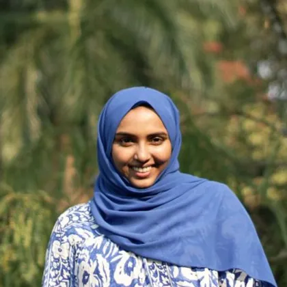
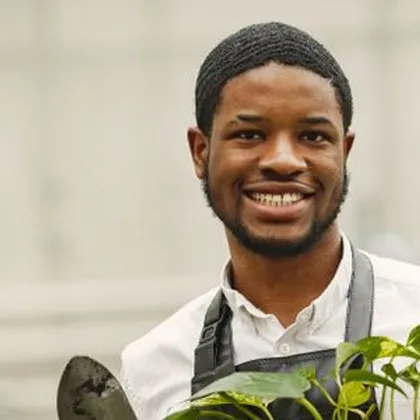
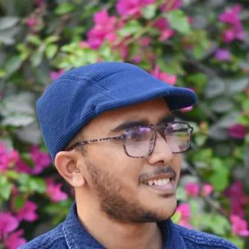
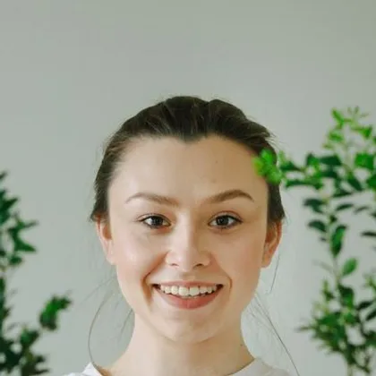

- Home
- About
A farm in the middle of the city.
Rootwork exists to make fresh food, useful skills and good company part of everyday life in our neighbourhood.
Our mission
Everyone should be able to grow something.
We believe that growing food together is one of the simplest ways to build a stronger community. It gets people outdoors, teaches skills that last and puts good food on tables that need it.
We are a registered charity, run by a small team and hundreds of volunteers. Every penny we earn goes back into the soil.
The team

Farida Haque
Founder & director
Started Rootwork with a borrowed wheelbarrow and a hunch that neighbours would show up.

Joe Mbeki
Head grower
Trained at Kew, grows tomatoes the size of fists and teaches like a patient uncle.

Dev Anand
Grower & trainer
Our first Green Jobs graduate, now training the next cohort.

Lucy Marsh
Community & volunteers
Knows every volunteer by name, tea order and favourite tool.
Our story
Twelve years in the field
- 2014 Two acres, one wheelbarrow
Farida persuades the council to lease a derelict allotment site for a pound a year.
- 2017 The kitchen opens
A shipping container becomes a community kitchen and Thursday suppers begin.
- 2020 The veg box years
During lockdown, volunteers deliver 600 boxes a week to neighbours who cannot get out.
- 2023 Green Jobs launches
The first cohort of eight trainees completes an accredited course. Seven find work.
- Today Still growing
Over 340 neighbours grow with us every week, and we have a waiting list for plots.
With thanks to our supporters
- Greater Manchester Community Fund
- The Lottery Trust (demo)
- Chorlton Rotary
- Sunnyside Garden Centre
- 340 monthly givers